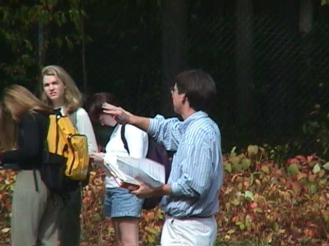

last updated October 20, 2009

For a teacher, few things surpass witnessing the glow of enlightenment appear on a young face. It is my belief that we all have something to teach to one another, and also to learn from one another.
The name of the student bookstore when I was at Macalester College as an undergraduate was "The Hungry Mind". I always felt that this was a great name for a bookstore and that every college student should have a "Hungry Mind".
For many college students this is true. These students come to college with good mental appetites and are curious and ready to learn. For these students, I like to provide the right "foods" to strengthen them for the challenges of their life’s work. However, I also think that it is important to cultivate the palate, by introducing materials that may at first seem a bit foreign or distasteful, but that upon future encounters become favorite foods. To me, this is the essence of a well-rounded education.
For some students, the appetite needs to be whetted. These students, for whatever reason, may not yet have experienced the joys of seeking knowledge. I think that these students need to be helped to overcome their "energy of activation". For them, I like to find out who they are and what might interest them, and then ask a lot of questions, particularly things that they may not have thought about or encountered before.
For students who do not want to learn, who expect to be taught, who will forever find seeking knowledge to be distasteful, I have no simple solution. These students, if and when they are encountered, need to be dealt with one at a time. These are the students who are most unlike those of us who have reached this level of academia, and who thus present the biggest challenge.
To really teach any student, however, I feel that it is important to reach him/her on a personal level. I came to know several of my undergraduate professors personally via numerous one-on-one conversations either in their offices or elsewhere on campus. From these encounters arose respect; I liked these people. When they taught, I wanted to go to class, I paid close attention and I learned. This level of instruction is difficult to provide at the undergraduate level at a large research university, and the opportunity to do so is one of the reasons I find the Lyman Briggs [College] attractive.
last updated October 20, 2009